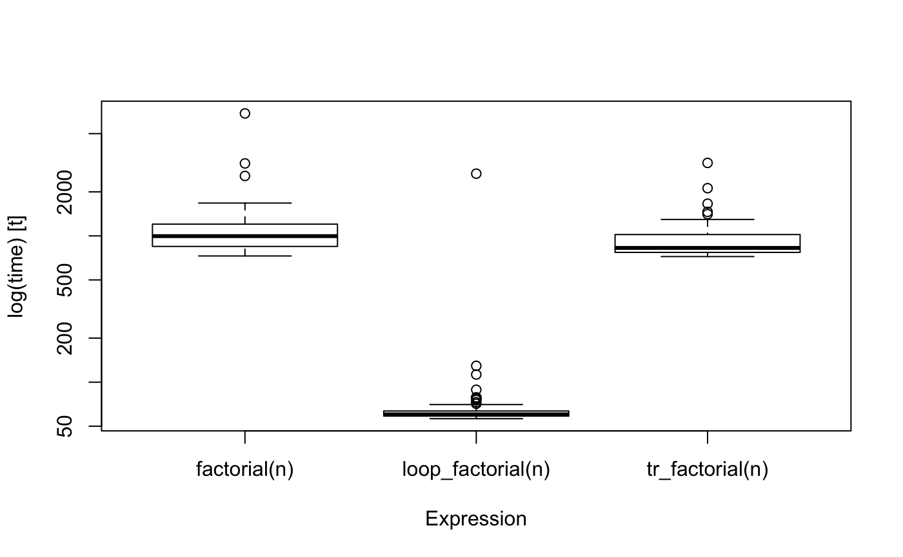
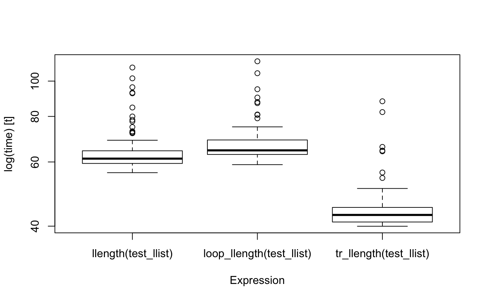

Recursive functions are the natural way to express iterations in a functional programming langauge, but in R, they can be significantly slower than loop-versions and for moderately long sequences or moderately deep trees, recursive functions will reach a limit imposted on them by the stack limit.
There are known solutions to these problems, as long as functions are written to be tail-recursive, meaning that the return value of a function is either a base value or another recursive call, but where we do not call recursively to then do something with the result.
The goal of tailr is to automatically transform tail-recursive functions into loops or trampolines.
Installation
You can install the released version of tailr from CRAN using
You can install tailr from GitHub with:
Examples
We can take a classical recursive function and write it in a tail-recursive form using an accumulator:
We can then, automatically, translate that into a looping version:
tr_factorial <- tailr::loop_transform(factorial, byte_compile = FALSE)
tr_factorial
#> function(n, acc = 1) {
#> if (n <= 1) acc
#> else factorial(n - 1, acc * n)
#> }
tr_factorial(100)
#> [1] 9.332622e+157I have disabled byte compilation to make running time comparisons fair; by default it is enabled. For a function as simple as factorial, though, byte compiling will not affect the running time in any substantial amount.
We can compare the running time with the recursive function and a version that is written using a loop:
loop_factorial <- function(n) {
val <- 1
while (n > 1) {
val <- n * val
n <- n - 1
}
val
}
n <- 1000
bm <- microbenchmark::microbenchmark(factorial(n),
loop_factorial(n),
tr_factorial(n))
bm
#> Unit: microseconds
#> expr min lq mean median uq max
#> factorial(n) 705.661 734.1925 888.89196 762.9200 863.3195 5120.883
#> loop_factorial(n) 56.239 57.4215 83.69814 58.3215 58.9835 2201.999
#> tr_factorial(n) 706.612 727.2185 809.20835 747.1420 797.3300 2209.876
#> neval
#> 100
#> 100
#> 100
boxplot(bm)
There is some overhead in using the automatically translated version over the hand-written, naturally, and for a simple function such as factorial, it is not hard to write the loop-variant instead of the recursive function.
However, consider a more complicated example. Using the pmatch package, we can create a linked list data structure as this:
A natural way to process linked lists using pattern matching is to write recursive functions that matches different patterns of their input. A function for computing the length of a linked list can look like this:
llength <- function(llist, acc = 0) {
cases(llist,
NIL -> acc,
CONS(car, cdr) -> llength(cdr, acc + 1))
}It is reasonably simple to understand this function, whereas a looping version is somewhat more complicated. An initial attempt could look like this:
loop_llength <- function(llist) {
acc <- 0
repeat {
cases(llist,
NIL -> return(acc),
CONS(car, cdr) -> {
acc <- acc + 1
llist <- cdr
})
}
}This version will not function, however, since it tries to return from inside a call to cases, and return only works inside the immediate scope.
Instead, we can use callCC to implement a non-local return like this:
loop_llength <- function(llist) {
callCC(function(escape) {
acc <- 0
repeat {
cases(llist,
NIL -> escape(acc),
CONS(car, cdr) -> {
acc <<- acc + 1
llist <<- cdr
})
}
})
}Notice that we have to use the <<- assignment operator here. This is for the same reason that we need a non-local return. The expression inside the call to cases is evaluated in a different environment than the local function environment, so to get to the actual variables we want to assign to, we need the non-local assignment operator.
It is possible to avoid cases using other functions from the pmatch package, but the result is vastly more compliated since pattern matching and expressions that should be evaluated per case needs to handle scoping. We can automatically make such a function using tailr, however:
The function we generate is rather complicated
tr_llength
#> function(llist, acc = 0) {
#> cases(llist,
#> NIL -> acc,
#> CONS(car, cdr) -> llength(cdr, acc + 1))
#> }
#> <bytecode: 0x7fd1d99180b0>but, then, it is not one we want to manually inspect in any case.
The automatically generated function is complicated, but it actually outcompetes the hand-written loop version.
make_llist <- function(n) {
l <- NIL
for (i in 1:n) {
l <- CONS(i, l)
}
l
}
test_llist <- make_llist(100)
bm <- microbenchmark::microbenchmark(llength(test_llist),
loop_llength(test_llist),
tr_llength(test_llist))
bm
#> Unit: milliseconds
#> expr min lq mean median uq
#> llength(test_llist) 52.34161 56.25923 60.35212 60.01097 63.49811
#> loop_llength(test_llist) 55.82252 58.51989 61.98243 61.40192 64.60558
#> tr_llength(test_llist) 36.70087 38.58082 41.47196 41.26752 43.45738
#> max neval
#> 94.15608 100
#> 73.45966 100
#> 74.69391 100
boxplot(bm)
It is, of course, possible to write a faster hand-written function to deal with this case, but it will be about as complicated as the automatically generated function, and you don’t really want to write that by hand.
As you have no doubt noticed about llength, it is not in fact tail-recursive, from the look of it, since the final recursion is enclosed by a call to cases. The function is only tail-recursive because it can be translated into one by rewriting the cases function call to a sequence of if-statements. The tailr package doesn’t handle cases from pmatch by knowing about this package. Instead, it has a mechanism that lets you provide re-writing rules.
If you set the attribute “tailr_transform” on a function, and set this attribute to a function, then that function will be called when tailr sees the function, before it attempts any other processing. The attribute must be a function that maps an expression to another, re-written, expression. The one for cases looks like this:
tailr_transform_call <- function(expr) {
stopifnot(rlang::call_name(expr) == "cases")
args <- rlang::call_args(expr)
value <- args[[1]]
patterns <- args[-1]
eval(rlang::expr(cases_expr(!!value, !!!patterns)))
}
attr(cases, "tailr_transform") <- tailr_transform_callYou can use this mechanism to support tail-recursion for non-tail-recursive functions that can be rewritten to be tail-recursive.